Práctica final Entorns: Say Big Numbers
Este repositorio contiene el código y la configuración necesarios para la aplicación web Say Big Numbers. A continuación, se detallan los pasos para configurar el entorno de desarrollo y desplegar la aplicación.
Configuración de webapp
Configurar Tomcat local:
1. Mirar si tenemos java instalado
2. En el caso de que no tengamos Java instalado en nuestro dispositivo, habrá que instalarlo.
3. Comprobar si el servicio Tomcat está instalado en nuestro sistema:
4. En el caso de que no esté instalado, seguimos los siguientes pasos:
+
+
+
+
5. Procedemos a la creación del archivo "tomcat.service" para poder ejecutar Tomcat como servicio:
Y procedemos a ponerle el siguiente código:
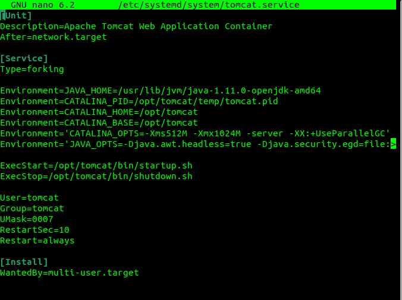
6. Restablecemos Tomcat para establecer los cambios:
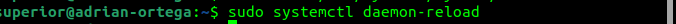
7. Comprobar si tenemos instalado en nuestro sistema el firewall UFW y está activo:
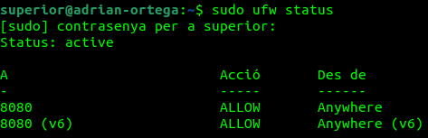
8. En el caso de que no lo tengamos instalado, proceder a instalarlo:
9. Habilitamos el firewall en el arranque de nuestro sistema:
10. Habilitamos en UFW el puerto que queremos abrir (8080):
11. Habilitamos el servicio de conexiones SSH:
12. Comprobamos si el servicio UFW está activo y cargado con éxito:
13. Comprobamos el estado de UFW y vemos si están los puertos que hemos habilitado:
14. Vemos si UFW deniega el tráfico entrante, y permite el saliente:
15. Configurar los usuarios del tomcat (usuarios & contraseñas):
16. Entrar en [localhost](http://localhost:8080), que es nuestro tomcat.
17. Comprobar que funcionan las paginas de Server Status, Manager App y Host Manager
18. Manager App, donde encontramos el listado de apps:
19. Desplegar el archivo WAR y ejecutar app:
Configurar archivo WAR en Tomcat Servidor
1. Mover archivo .war de local al servidor con scp:

2. Conexión ssh al servidor:

3. Mover a la ruta webapps de tomcat:
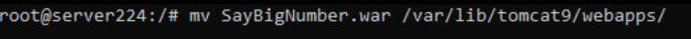
4. Entrar vía web al tomcat del servidor:
5. Otra opción para subir y desplegar el archivo .war manualmente, es en el apartado “manager” de tomcat:
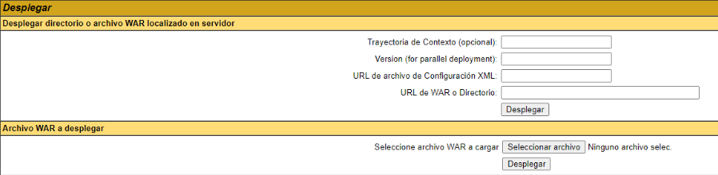
6. Una vez desplegado, lo encontraremos en la lista de Rutas de aplicaciones.
Al subir un nuevo archivo de proyecto .war se genera automáticamente un directorio con el mismo nombre, en él podemos encontrar todo lo necesario para ejecutar la aplicación web.

7. Al Ejecutar la aplicación encontramos nuestro proyecto:

8. Ya podemos llamar al servicio con parametros como:
PIPELINE
CREAR PROYECTO en GIT
- Creamos un nuevo repositorio en github.com.
- Abrimos la Terminal en nuestro Sistema.
- Navegamos hasta la ruta raíz donde deseamos instalar el repositorio local.
- En nuestro nuevo repositorio en GitHub, obtenemos la URL “https” de clonación.
- En la terminal ejecutamos el comando “git clone {URL}”, al ejecutar el comando ya tenemos el repositorio remoto en Local para así trabajar con él.
- Para asegurarnos que funciona, desde la terminal, creamos un nuevo archivo, por ejemplo “README.md”, lo agregamos al área de preparación con el comando “git add {NOMBRE_ARCHIVO}”, confirmamos los cambios con “git commit -m {MENSAJE}” y sincronizamos con el repositorio remoto con el comando “git push origin main”.
- El archivo ya está disponible en nuestro repositorio de GitHub.
UNIT TESTS
Hacer pruebas unitarias en nuestra aplicación Java para que nos permita detectar y corregir errores de manera temprana, garantizando la calidad del código y mejorando la confiabilidad y robustez de nuestra aplicación.
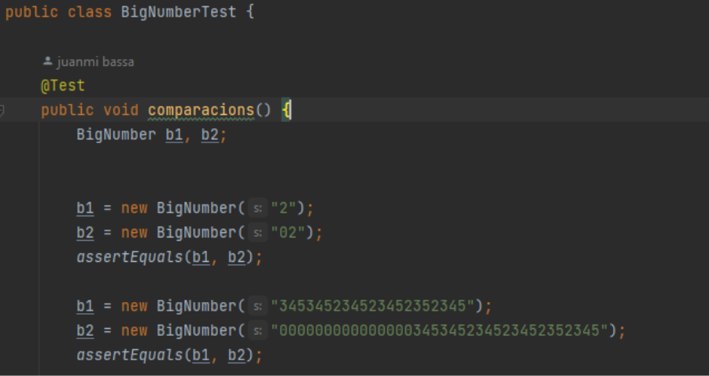
DESARROLLO DE CÓDIGO
Programar la aplicación Java en base a nuestros Tests Unitarios y las especificaciones pedidas.
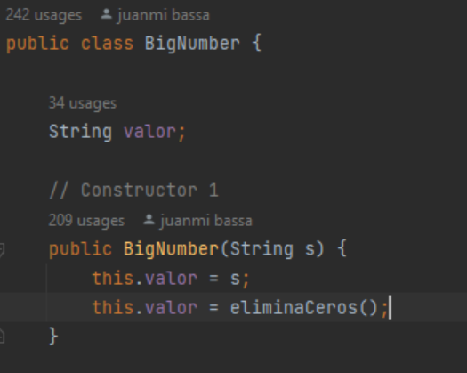
MAVEN
¿Qué es?: Maven es una herramienta de gestión de proyectos de software ampliamente utilizada en el desarrollo de aplicaciones Java. Su principal objetivo es ayudar a los desarrolladores a gestionar y organizar las dependencias de su proyecto, así como automatizar tareas comunes relacionadas con la construcción, el empaquetado y la documentación del proyecto.
Configurar Maven: El primer paso es instalar Maven en nuestro sistema Local. Una vez instalado podemos configurar Maven con nuestro proyecto, esto se hace creando un archivo YAML en la raíz del proyecto llamado "pom.xml".
En él se incluye información sobre el nombre del proyecto, su versión, los desarrolladores involucrados
y las bibliotecas o frameworks que se utilizan.
Tal que así:

Una vez configurado el archivo correctamente, nuestro proyecto ya se podrá construir y administrar con los comandos que maven nos proporciona, como por ejemplo “mvn clean”, “mvn compile” o “mvn package”.
SONARCLOUD
¿Qué es?: SonarCloud es una plataforma en línea proporcionada por SonarSource que ofrece análisis estático de código y evaluaciones de calidad para proyectos de desarrollo de software. Ayuda a identificar y corregir problemas de calidad del código, detectar vulnerabilidades de seguridad y mejorar la eficiencia y mantenibilidad del software.
Vincular un nuevo Proyecto en SonarCloud web: Creamos una nueva organización en sonarcloud.io para el proyecto y vinculamos el repositorio remoto de GitHub a la nueva organización, en nuestro caso será “SayBigNumbersServices”.

Y ya tendremos la conexión entre SonarCloud y nuestro repositorio de GitHub.
Aquí podemos ver el resultado:
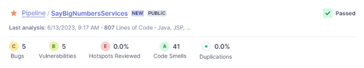
CONFIGURAR GITHUB ACTIONS
Conexión github + WAR:
¿Qué es?: Un archivo WAR (Web Application Archive) es un formato de archivo utilizado para empaquetar y distribuir aplicaciones web desarrolladas en el lenguaje de programación Java. Este formato es comúnmente utilizado en entornos de desarrollo web basados en la plataforma Java, como Apache Tomcat, JBoss, WebSphere, entre otros.
Cuando se despliega un archivo WAR en un servidor web, el servidor extrae el contenido del archivo y lo configura para que la aplicación web sea accesible a través de una URL específica.
Generar el archivo War: Para ello, la forma más común es utilizando la Terminal, posicionándonos en el directorio raíz del proyecto y ejecutando el comando “mvn clean package”.
Nosotros utilizaremos y configuraremos un workflow en GitHub Actions para que el archivo .war sea generado automáticamente en cada cambio y subida al repositorio remoto:
Para ello, creamos un archivo YAML, normalmente llamado “main.yml” o “build.yml”, dentro del directorio
“.github/workflows”.
En el interior del archivo configuramos la llamada al
Workflow:
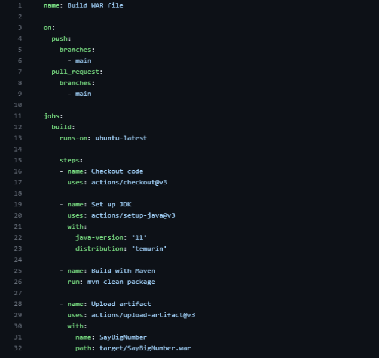
En esta configuración podemos ver que ejecutará el comando “mvn clean package” al realizar un push o pull del proyecto y creará un artefacto con el archivo .war.
Aquí podemos ver el resultado:
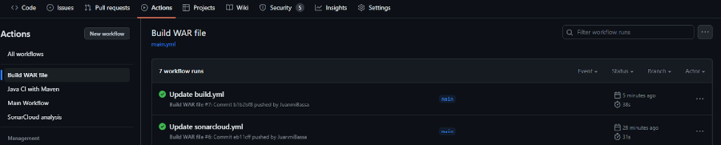

Conexión github + SonarCloud:
Una vez tengamos configurado el proyecto en SonarCloud web, para su vinculación con GitHub Actions debemos entrar en nuestro proyecto en “SonarCloud > administration > Analysis Method”, en este apartado encontraremos la opción de Analizar el proyecto con GitHub Action.
Una vez dentro, podemos observar una serie de pasos a seguir para realizar la conexión:
1 Inhabilitar el análisis automático.
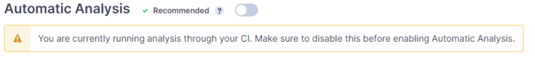
2 Crear un Actions Secret en GitHub con los datos proporcionados. Este archivo se crea desde los ajustes de nuestro proyecto en GitHub.
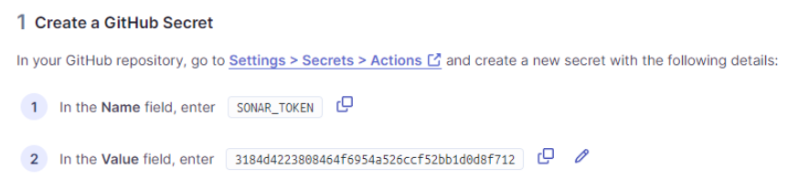

3 Ya que nuestro proyecto utiliza Maven, seleccionamos esa opción y añadimos las siguientes líneas en el apartado “properties” de nuestro archivo pom.yml:
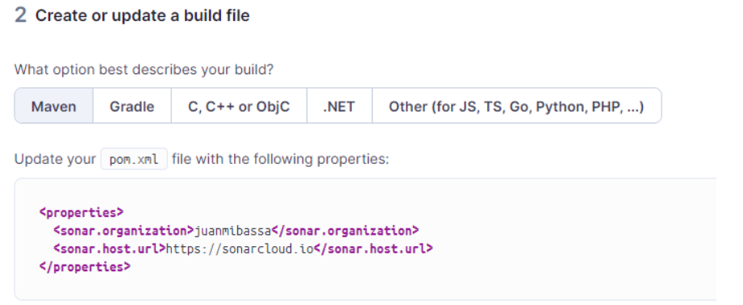
4 Creamos un archivo YAML llamado “build.yml” en nuestro directorio “.github/workflows/” con el código proporcionado:
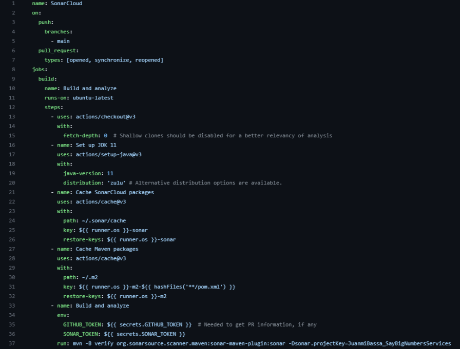
Una vez realizados todos los pasos anteriores correctamente, al realizar un nuevo cambio en el
proyecto, el GitHub Actions de SonarCloud se ejecutará automáticamente:
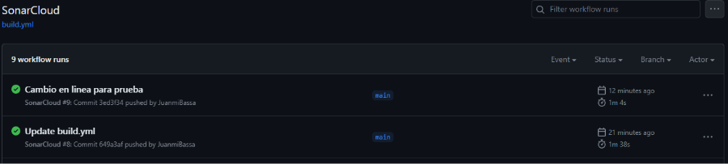
Si entramos en la información de la ejecución, veremos todos los pasos realizados, nuestro Análisis se puede encontrar en el paso “Build and analyze”, en una de las líneas llamada “[INFO] ANALYSIS SUCCESSFUL <link del análisis en SonarCloud>, apretando a ese link nos llevaría al análisis en la Web de SonarCloud.
También podemos ver el análisis de SonarCloud desde github:

API TEST con Postman
¿Qué es?: Postman es una herramienta de colaboración y desarrollo de API que permite a los desarrolladores probar, documentar y realizar solicitudes a API de manera eficiente. Es una aplicación que se ejecuta en el escritorio y brinda una interfaz gráfica de usuario para enviar solicitudes HTTP y HTTPS a diferentes endpoints de API.
Una vez tenemos la URL de nuestro Servidor de Despliegue de pruebas, podemos hacer el siguiente test, el cual devolverá 200 si la respuesta ha sido exitosa, lo que significa que hay conexión:
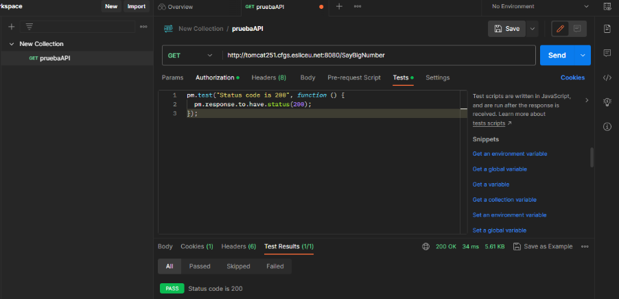
E2E TEST con Cypress
¿Qué es?: Cypress es una herramienta de pruebas E2E principalmente diseñada para aplicaciones web, esta se ejecuta localmente en tu entorno de desarrollo.
Instalación en Proyecto:
Para crear un nuevo proyecto con
Cypress será necesario tener instalado las siguientes herramientas:
Una vez tengamos el paso anterior, desde el directorio raíz de nuestro proyecto iniciamos con “npm init
-y” un nuevo proyecto Node.js, este creará un archivo package.json con valores por
defecto.
Configuración Test:
Instalamos cypress en nuestro
proyecto:
Y abrimos el test Runner de Cypress con “npm run open”, esto ejecutará una lista de nuestros tests de
Cypress definidos en “package.json”:
Los test se escriben en archivos JavaScript, por lo general se publican en el directorio “integrations”
de Cypress donde se creará un archivo para cada funcionalidad, en este caso es un test que verifica el
titulo de la página, se podría llamar “checkTitle.spec.js”.
CONFIGURAR GITHUB ACTIONS
Conexión de github + Postman (API):
Una vez tengamos la configuración de nuestros Test en Postman terminado, procedemos a hacer la conexión y creación de su GitHub Actions, para ello:
-
En nuestro repositorio de GitHub, en el directorio “.github/workflows” del proyecto
creamos el archivo YAML “postman.yml”, y lo editamos con herramientas y comandos adecuados para ejecutar
las pruebas API ya creadas:
- Haz un commit y un push de tus cambios al repositorio de GitHub.
- Ve a la pestaña "Actions" en tu repositorio de GitHub y verás que se está ejecutando un flujo de trabajo.
- Espera a que el flujo de trabajo se complete y verifica los resultados de las pruebas de Postman.
Conexión de github + Cypress (e2e):
Una vez tengamos la configuración de nuestros Test en Postman terminado, procedemos a hacer la conexión y creación de su GitHub Actions, para ello:
-
En nuestro repositorio de GitHub, en el directorio “.github/workflows” del proyecto
creamos el archivo YAML “cypress.yml”, y lo editamos con herramientas y comandos adecuados para ejecutar
las pruebas e2e ya creadas:
- Haz un commit y un push de tus cambios al repositorio de GitHub.
- Ve a la pestaña "Actions" en tu repositorio de GitHub y verás que se está ejecutando un flujo de trabajo.
- Espera a que el flujo de trabajo se complete y verifica los resultados de las pruebas de Cypress.
DESPLIEGUE
Por último, debemos configurar un YAML para que despliegue nuestra aplicación en el entorno deseado (desarrollo, pruebas, producción, etc.) después de que todas las pruebas hayan sido exitosas y el análisis de SonarCloud sea satisfactorio.
El archivo YAML estará situado en el directorio “.github/workflows”, y su configuración se basará en
definir los pasos necesarios para ejecutar secuencialmente los diferentes flujos de trabajos
instalados.
DIAGRAMAS UML
Use Case
Secuencia
Flujo
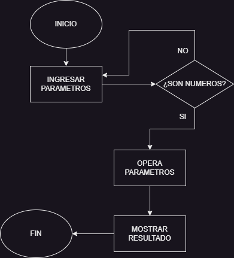
Estado
Clase